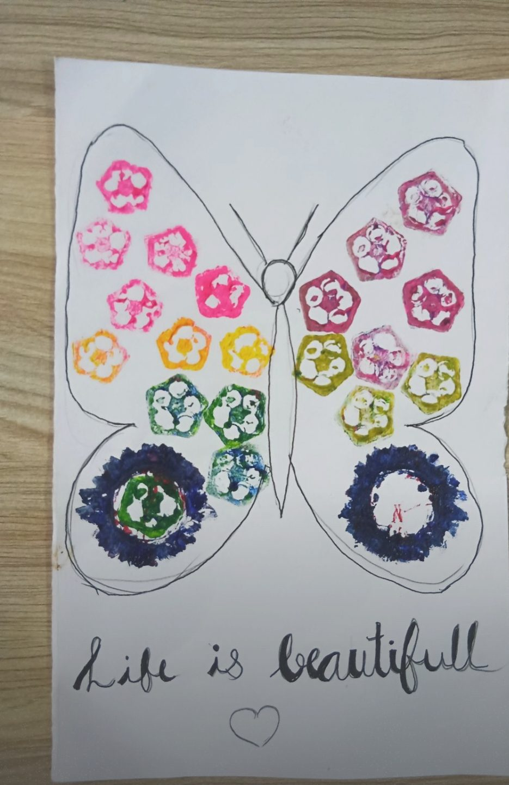
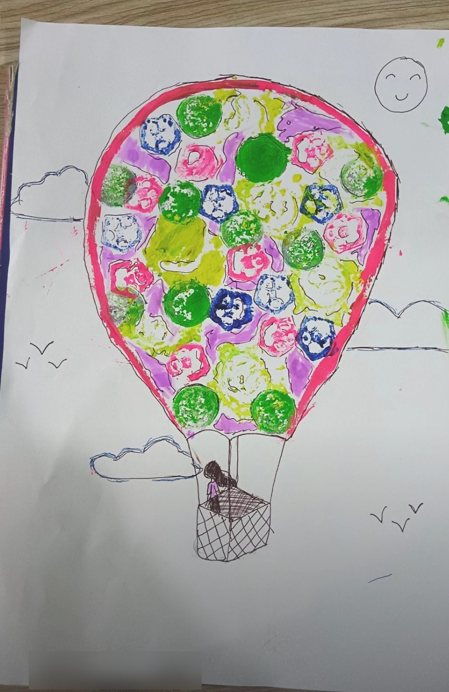
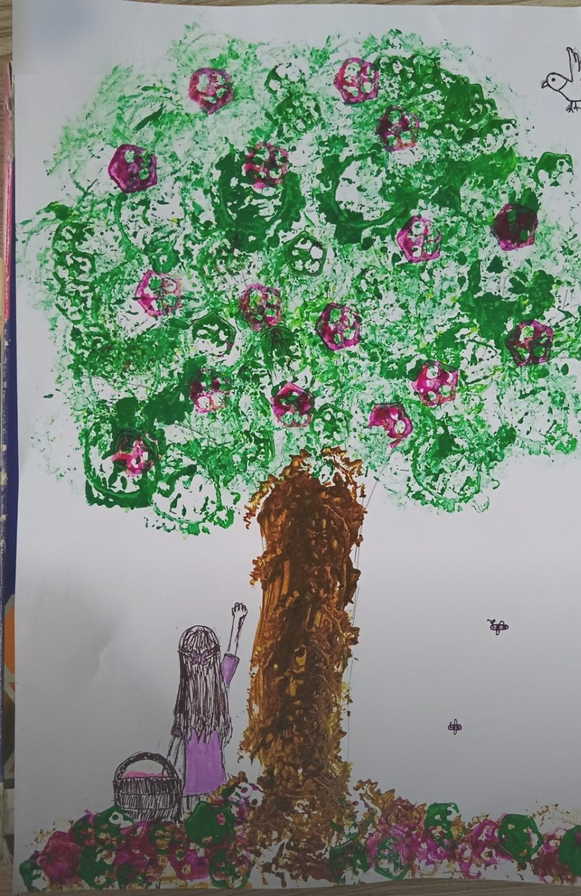
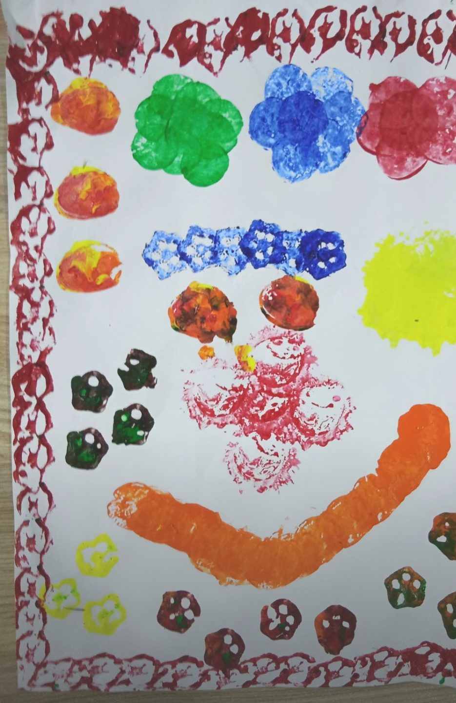

The situation
I was introducing the volume of prisms, which needs a clear idea of cross-sections. Cross-sections are abstract when they stay on the board. I wanted a way in that suited the "low floor, high ceiling, wide walls" approach I use in my classroom, so that every learner could begin, whatever their prior knowledge.
What I tried
I turned the concept into something students could hold and make. They painted with vegetables, printing the shapes that appear when a vegetable is cut at different angles. We started from what students already knew and moved gradually towards the unknown.
What happened
As they painted, students found that the shape changed with the angle of the cut, and no two pictures matched. Each artwork celebrated one student's contribution and a different perspective. Students grasped the mathematics and also explored creativity and critical thinking.
What I learned
Art does not dilute the maths. It widens the walls so more students can reach it, and it frees minds rather than constraining them.



